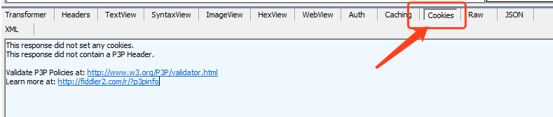
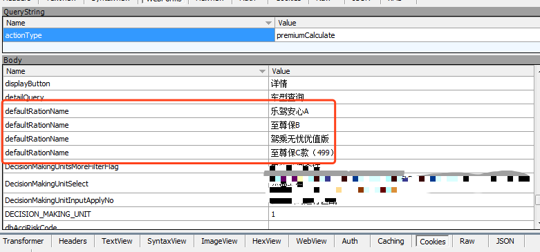

有关请求头反爬的总结，其实大多时候这些反爬并不是官方刻意做的反爬，而是人家的业务逻辑就是如此。
在我工作中很多时候就是由于请求头设置不对导致请求不到数据，通常会报网络异常、服务端的代码报错、登录失效等
- Content-Type: text/plain格式请求抓包:
1 | POST url HTTP/1.1 |
- Content-Type: application/x-www-form-urlencoded格式请求抓包
1 | POST url HTTP/1.1 |
Content-Type这个字段表示整个请求体的内容类型，很多时候的网络异常就是这个字段导致的
Cookie 不用多少，用来让服务器识别你的一些身份信息的，需要额外补充的是，当某些时候明明其他请求头和请求体设置正确却拿不到正确响应的时候可以看一下，是否在这个请求之前少了其他请求，具体可以用fiddler抓包浏览器的请求,看之前有没有请求在本地存储cookie

如果有设置cookie，在代码中加上那个请求，获取到cookie，在cookie和浏览器的cookie一致后一般都能解决问题
Referer大多时候不传也能获取到响应，但偶尔也有少数请求需要带上才能正常访问
在text/plain类型的请求中，参数scriptSessionId我起初没有注意，直接乱写的一串字符，到之后续的请求报错，经排查后发现，这个字段估计是一个服务端的session相关字段，往往相邻几个请求都需要用这同一个id才能拿到响应，当时我是前后两个请求用了不同sessionid
另外，爬虫爬不到数据，或爬到错误数据，超过70%的原因都是请求体中数据传的不对，我维护的项目里，几个关键请求的参数都有2000多个，所以我的工作基本就是在找错误字段[手动苦笑],但是从这个脏活中我也总结出拿不到正确响应的几点规律：
- 部分字段对应的值传的不对，比如某些flag字段应该传1的我传了0，
- 部分字段名有时候需要重复，例如这种：

这种情况，重复次数不一致，或后面的值不对也会导致请求失败 - 有时候浏览器发的请求，请求体字段是有先后顺序，而我们的代码中有时候经过一段时间的维护改动后，爬虫发出的请求体字段顺序和浏览器发的字段顺序不一致了，这时候就有可能导致请求失败，这种一般都是在前面两种问题完全排除了后，才考虑第三种可能，因为一上来就手动给两千多个参数排顺序实在有点累